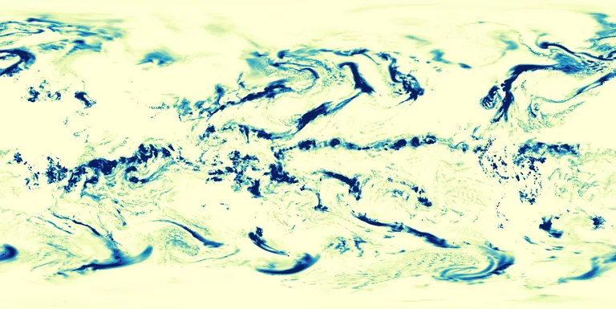

Benchmark / Near-lossless / era5-tp-1h / era5-tp-1h-00
era5-tp-1h-00
2023-01-15 · sample details
Each point shows a configuration at this budget level. The line shows the best observed trade-offs. The All corpora view pools size and decode time across samples for configurations completed on every corpus with results at this level. Broken promises are listed below.
